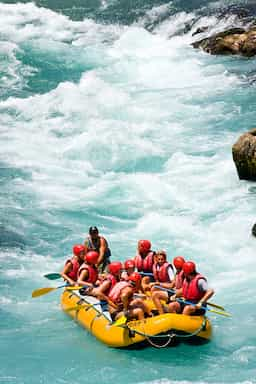

History
In the late '90s, we noticed that many commercial outfitters were focusing almost
exclusively on multi-day Grand Canyon trips or heading out of state for bigger
water. We saw an
opportunity: offer high-quality, accessible day trips on the Salt River's legendary
canyon
section—where Class III-IV rapids crash through stunning Sonoran Desert scenery
lined with saguaro
cacti, sheer red-rock walls, and bighorn sheep—without requiring a full vacation
commitment.

We wanted to
make whitewater rafting feel like a "local adventure" that Phoenix-area residents
and
visitors could do
in a single day. We started small with just two rafts, a beat-up trailer, and a tiny
office in a strip
mall near
Mesa. The very first trip in spring 2000 had only 7 paying customers—mostly friends
and
coworkers—but word spread quickly about the guides' safety focus, sense of humor,
and genuine love
for the river.